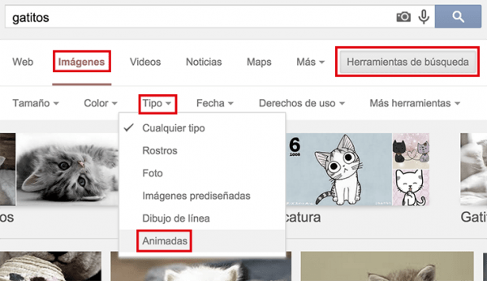

¡Lo lograste! Diste el primer paso…
Si estás leyendo esto es porque te gusta escribir y crear contenido, o al menos te gustaría que te guste. Y no hay mejor manera de aprender que con pasión. ¡Por eso, mereces un aplauso!
Pero no todo es alegría y jolgorio a la hora de crear. Quizá estés enfrentando la temida página en blanco y pienses en que lo mejor sería dejar todo esto de la escritura para otro momento.
¡Alto ahí!
A todos nos pasó. Nos sentamos cuaderno en mano o frente a nuestra computadora, y… nada. Ni una palabra. Sólo el cursor de la pantalla guiñándonos con su mirada acusatoria. Sabes muy bien lo que quieres decir, pero no sabes cómo.
Afortunadamente hay muchos trucos, consejos y herramientas para vencer este y otros problemas a la hora de crear cualquier tipo de contenido periodístico y/o audiovisual. Y para eso creamos este curso; así que… relajate, lee, aprende y disfruta.
1.1 Qué publicar
Si tuvieses la oportunidad de escribir sobre cualquier cosa… ¿sobre qué escribirías? Seguramente elegir un tema que te apasione sea la mejor manera de comenzar. Para comenzar te invitamos a pensar en alguna noticia, actividad, película, disciplina, hecho histórico o personaje que te fascine.
¿Pero cómo lograr que lo que sea que escribas llegue a mucha gente?
Para que un artículo sea exitoso, debe tener al menos una de estas características:
entretenido, interesante, emotivo, nostálgico, informativo, asombroso, novedoso, provocativo, incómodo o indignante
Cada una de estas características puede lograrse de distintas maneras. Por eso, veamos algunos ejemplos de posibles formatos de contenido:
Textos informativos
Puede tratarse de un texto de autoría propia o recopilar información de distintas fuentes. ¿Leíste mucho sobre un tema y te gustaría compartir todo lo que sabes? ¿Crees que podrías aclarar el panorama sobre algún hecho concreto?
Por ejemplo: ¿Sabías que limpiarse los oídos con un hisopo puede ser una pésima idea? Con sólo explicar el funcionamiento interno del oído se puede lograr un artículo interesante y que desafía una creencia popular.
Y si te animas a investigar aún más, podrías desarrollar temas más complejos. Qué es, cómo funciona y qué busca ISIS, la amenaza terrorista en Medio Oriente.
Artículos de opinión
Tu opinión personal sobre un suceso o tema en particular puede resultar muy valiosa, siempre y cuando defiendas tus argumentos con lógica e información válida y relevante.
Por ejemplo: Un repaso por la carrera de Néstor Kirchner, el ex-presidente Argentino que según la opinión del periodista, revivió la política para toda una generación. Una opinión que sin duda despertará comentarios y discusiones, haciendo del contenido algo mucho más rico.
Crónicas
Puede ser un relato en primera persona sobre una experiencia personal, un espectáculo o simplemente un experimento que decidas emprender específicamente para documentarlo en tu artículo.
Por ejemplo: ¿Cómo impactaría en tu vida no usar tu teléfono celular por una semana entera?

Listas
Los listados atraen desde el número que nos invita a descubrir cosas como “17 películas que están basadas en hechos reales”. Porque los números nos dan una clara noción de la longitud que tendrá el listado y nos intriga descubrir cuál será el primer ítem y cuál en último. O quizá directamente recordemos una película y queramos saber si estará incluida en el listado.
Por ejemplo: 23 avances científicos y tecnológicos del último mes.
Ilustraciones y tiras gráficas
Si te gusta dibujar, ¿por qué no traducir tus opiniones y sentimientos a una tira y compartirla?

Noticias y artículos de actualidad
Si todas las personas que sigues en Twitter están hablando de algo, seguramente sea un buen tema para explorar y ampliar en un artículo. En estos casos, investigar distintas fuentes usando la búsqueda de Google y Twitter es la mejor manera de recopilar la mayor cantidad de información posible y en base a eso crear un artículo periodístico de calidad.
Por ejemplo: Airbnb llega a Cuba: ¿Cómo funcionará sin tarjetas de crédito ni Internet? Una buena investigación con varias fuentes narrada de una manera interesante.
Videos
Cada vez consumimos más videos en internet y vemos menos televisión tradicional. ¿La TV ha muerto? No, pero está mutando. Y hoy en día, cualquier persona con una cámara de video y una conexión a internet puede crear su propio programa.
Por ejemplo: La mejor manera de hacer brownies caseros y sin horno. Si sabes cocinar, criticar cine o series o simplemente te gusta hablar frente a cámara, tu éxito está asegurado.
1.2 Qué reglas seguir
Hay tres reglas que debes tener en cuenta a la hora de publicar tus artículos y videos en El Meme:
1. No robar
¡No está bueno robar! Si querés tomar contenido escrito o creado por otra persona, es indispensable dar crédito al autor original. Esto incluye las imágenes y los videos.
2. Citar la fuente
Más adelante veremos en profundidad este tema, pero es importante que sepas que un contenido no está completo sin citar las fuentes de donde obtuviste la información y las imágenes.
3. Compartir
El compartir es lo que hace de El Meme una gran comunidad. Por eso no dudes en compartir contenido interesante con tus amigos, en definitiva es lo que te gustaría que hagan con tu contenido.
1.3 De dónde obtener ideas
Con una mano en el corazón: no todos podemos cerrar los ojos y tener una idea lista para producir como por arte de magia.
A la inspiración hay que ayudarla.
OBSERVA todo lo que pasa a tu alrededor
Mira tu escritorio, tu Facebook, tu Twitter, mira todo lo que te rodea en la calle, en el colectivo o en tu trabajo y busca algo que te llame la atención (o no).
INVESTIGA sobre lo que te interese
La noticia del día, el futuro de la tecnología, los personajes de Mad Men, hormigas, cualquier cosa sirve como disparador. Busca información en español y -si puedes- en inglés. Una vez que hayas leído lo suficiente sobre cualquier tema, sentarte a escribir sobre eso te resultará mucho más sencillo.
SELECCIONA y ordena la información
Una vez que investigaste y recolectaste información, busca un denominador común. Cura el contenido eligiendo lo que sirve y descartando lo que no.
PIENSA LATERALMENTE para encontrar tu enfoque
Imagina “qué pasaría si…” Busca similitudes y ejemplos, pregunta cosas y contestalas dentro de tu artículo.
El pensamiento lateral [wikipedia] es un método de resolución de problemas que busca salirse del recorrido “natural” que haría tu cerebro, buscando soluciones creativas y rompiendo con el modo de razonamiento tradicional.
Ted Talk: Tim Brown sobre “Creatividad y juego”
Si quieres saber más sobre procesos creativos y cómo nutrirte de ellos, te recomendamos ver la siguiente lista de charlas TED.
1.4 Dónde buscar información
Bien, ya sabemos sobre qué escribir y ya determinamos de qué manera hacerlo. Pero… ¿de dónde saco toda la información necesaria para hacerlo?
Navegando el mar de información de Twitter
Para estar al tanto de todo lo que está pasando en el mundo hoy en día, es indispensable tener una cuenta de Twitter y utilizarla activamente. Otras plataformas como Facebook, Instagram y Tumblr nos pueden ayudar a completar nuestra búsqueda de información, pero definitivamente Twitter es donde deberían estar tus ojos.
¿Cómo usar Twitter? Acá algunos tips:
– Buscar a fondo: Al buscar en Twitter, es muy importante no buscar sólo una palabra clave, sino repetir la búsqueda con palabras similares.
Otra forma de potenciar tu búsqueda es utilizar la búsqueda avanzada y filtrar los resultados de búsqueda para ver sólo Tweets que contengan imágenes, videos o enlaces, de esta manera encontrarás más rápido imágenes de último momento sobre algún suceso en particular.
– Usar listas, muchas listas: La mejor manera de estar al tanto de todo lo que sucede en Twitter es armando listas. Pueden ser de diarios locales, periodistas o figuras influyentes del espectáculo, el deporte y la política.
Si te encuentras investigando un tema en particular, lo mejor es armar una lista específica con expertos y personas relacionadas a esa historia.
La mejor manera de navegar entre las listas que hayas creado es utilizando aplicaciones como Tweetdeck.
– Recopilar Tweets para usos futuros: Si vas encontrando datos y fotos que sabes que te servirán para un artículo futuro, una gran herramienta para guardarlos es Storify.
Encontrando imágenes y GIFs animados
Cualquier texto apoyado en imágenes es más atractivo y fácil de digerir. Pero… ¿dónde encontrarlos? Te ayudamos:
– Tumblr: La meca del GIF animado. Si te interesa conocer más, hay una página de Tips que te puede servir para iniciarte en el mundo de Tumblr. La mejor manera de empezar es añadir a tus favoritos la página de Populares en Tumblr y desde ahí mismo buscar para perderse en el mar de imágenes.
– Giphy: Se trata de un sitio enteramente dedicado a los GIFs y es un buen recurso si no sabes exactamente qué buscas. Puedes navegar por categorías y buscar reacciones para darle vida a cualquiera de tus textos.
– Imgur: Para descubrir las imágenes que son populares en este momento en internet, Imgur.com es el mejor lugar.
– Reddit.com: Esta red social –que merece un capítulo aparte– tiene un a sección enteramente dedicada a los GIFs, y una manera rápida de encontrar cosas interesantes es ver los gifs más populares de la semana.
– Google: Para buscar imágenes animadas en Google, simplemente hay que hacer una búsqueda de imagen, clickear en Herramientas de búsqueda, desplegar el menú Tipo y seleccionar Animadas.

Las fuentes originales
¿Lees medios locales? Chequea también los medios de otros países. Hay cientos de publicaciones con contenido original que no tienen tanta difusión y ofrecen información valiosa. Muchas veces los medios locales obtienen información de extranjeros, y muchos portales grandes buscan noticias nuevas en portales más pequeños y especializados.
No te quedes con lo que dice Wikipedia. Revisa la sección de fuentes de cada artículo y busca de dónde salió la información original.
No dejes de chequear blogs, Twitter, Reddit y Tumblr para ser el primero en encontrar esa gema que está esperando salir a la luz.
La vida y la experiencia
Somos seres sociales, online y offline. Las charlas con amigos pueden ser un gran disparador para nuevas ideas. No dejes de lado las experiencias de todos los días. Todo lo que pasa y lo que observas en la calle, el trabajo o la universidad puede ser una gran fuente de inspiración.
Recuerda: cuanto más leas y observes, más fácil te resultará tener buenas ideas y diferenciar la buena información de la dudosa.
Ya sabemos… cómo inspirarnos, qué publicar, qué debemos tener en cuenta, y dónde buscar información.
Listos para la siguiente lección?


¿Qué te parece?